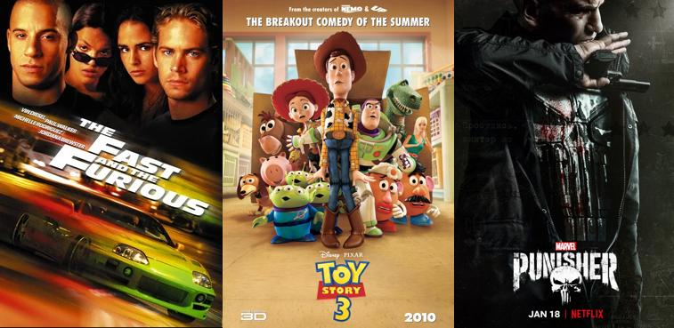

Berkay Furan's Portfolio
I'm a Web Developer
My first project created using HTML.
The Best Movies According to Berkay
My top 3 movies of all-time.
Toy Story
This is my favourite cartoon film
Punisher
An action packed series
Fast and furious
Super beautiful cars. Really fast.

My Favorite Cars
Porsche 911
Alfa Romeo Giulia
Mini Cooper s Cabrio

About Me
Contact Me